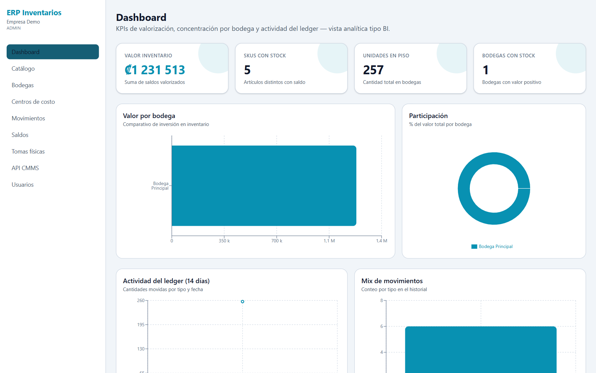

Portal
Dashboard
KPIs de valorización, concentración por bodega y actividad del ledger — vista analítica tipo BI. Los colores siguen el tema elegido.


Tarjetas KPI
| Campo / control | Qué es | Cómo usarlo |
|---|---|---|
| Valor inventario | Suma de saldos valorizados (₡). | Indicador principal de capital en inventario. |
| SKUs con stock | Artículos distintos con saldo mayor a cero. | Detecte catálogo sin existencias. |
| Unidades en piso | Cantidad total en todas las bodegas. | Volumen físico, sin importar el costo. |
| Bodegas con stock | Bodegas con valor positivo. | Cuántos recintos tienen mercancía. |
Gráficos y tabla
| Campo / control | Qué es | Cómo usarlo |
|---|---|---|
| Valor por bodega | Barras: comparativo de inversión en inventario. | Compare bodegas de un vistazo. |
| Participación | Dona: % del valor total por bodega. | Detecte concentración de capital. |
| Actividad del ledger (14 días) | Líneas: cantidades movidas por tipo (ENTRADA, SALIDA, AJUSTE, TRASLADO) y fecha. | Picos = recepciones o despachos fuertes. |
| Mix de movimientos | Conteo por tipo en el historial reciente. | Equilibrio entre entradas y salidas. |
| Top SKU por valor | Los 8 artículos con más capital inmovilizado. | Priorice conteos cíclicos sobre estos. |
| Detalle por bodega | Tabla: Bodega, Artículos, Cantidad, % valor, Valor. | Base para reportes a gerencia. |
i
Sin datos todavíaSi aparece “Sin datos de inventario. Registre movimientos para ver valorización.”, registre entradas en Movimientos.